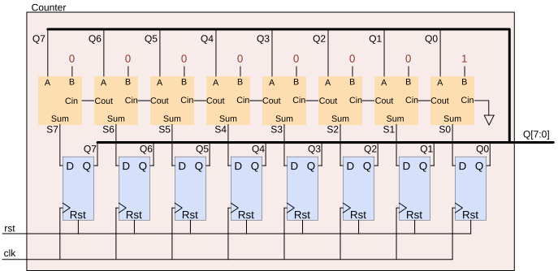
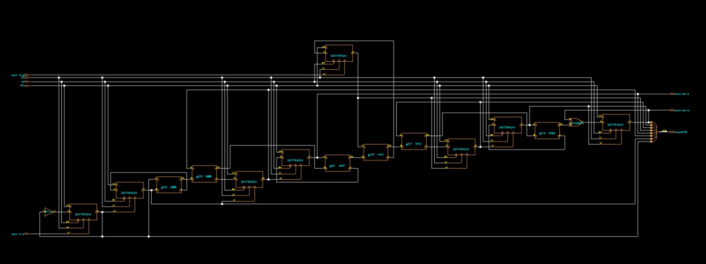

Digital IC design · 2025
8-bit counter ASIC design
An 8-bit up counter taken from Verilog RTL through scan insertion, I/O pad integration, and physical implementation.
 LOHAN ATAPATTU / PROJECT 05PAD-WRAPPED · PLACE & ROUTE
LOHAN ATAPATTU / PROJECT 05PAD-WRAPPED · PLACE & ROUTEDESIGN OVERVIEW
From Verilog to physical design.
The design is an 8-bit up counter with an active-low reset. I carried the RTL through synthesis and technology mapping, inserted scan DFT, wrapped the core with I/O pads, and ran the physical implementation flow in Cadence tools.
The DFT-inserted design uses two scan chains. The report records that the post-insertion DFT rule check passed and that the synthesized scan-ready counter had a reported cell area of 118.853 library area units. The pad-wrapped flow used a 10 ns clock constraint.
DESIGN & IMPLEMENTATION
Counter logic, scan chains, and layout.
Selected diagrams from the digital IC design assignment show the counter structure, DFT-inserted netlist, and pad-wrapped physical implementation.


IMPLEMENTATION STATUS
Physical checks remained incomplete.
The assignment report records that setup timing passed at synthesis, but post-route hold violations remained because clock-tree synthesis was incomplete. It also reports geometry (DRC) and connectivity errors for the pad-wrapped layout. The separate route-without-I/O-pads run is reported to complete without errors.